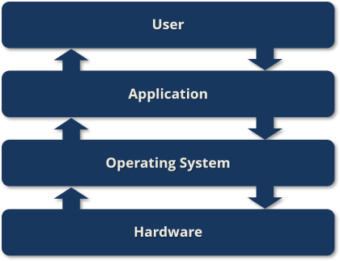

이진법을 이용해, 방대한 데이터와 정보를 저장하고 처리할 수 있는 전자적 기계 장치이다. 정보를 저장, 검색, 정리, 수정하기 위해 프로그램을 사용한다. 산술이나 논리셈(computation)을 자동으로 수행하고 텍스트, 그래픽, 심벌(특수 문자나 부호), 사운드 등을 처리하도록 프로그래밍할 수 있는 범용 장치(programmable machine)다.
컴퓨터 하드웨어는 컴퓨터 시스템이 작동하는 데 필요한 "물리적 구성 요소"이며, 손으로 만질 수 있다. 입력, 연산, 제어, 기억, 출력 등 다섯 가지 기능을 구현한다.
컴퓨터 소프트웨어는 컴퓨터 시스템이 작동하는 데 필요한 "논리적 구성 요소"이며, 손으로 만질 수 없다. 하드웨어를 움직이게 하는 명령어들의 모임을 말한다.
하드웨어와 소프트웨어의 차이점은 "물리적"인지 "논리적"인지에 있다. 하드웨어는 물리적인 형태가 있지만, 소프트웨어는 논리적이며 형태가 없다.
또한 하드웨어와 소프트웨어는 뗄 수 없는 관계이다. 하드웨어만 있으면 아무것도 할 수 없고, 소프트웨어만 있다고 해서 무언가를 동작할 수 있는 게 아니다. 하드웨어 위에 소프트웨어가 설치되어야 어떤 동작을 할 수 있다.
중앙 처리 장치(CPU; Central Processing Unit)는 컴퓨터 시스템을 통제하고 프로그램을 실행·처리하는 가장 핵심적인 컴퓨터의 제어 장치, 혹은 그 기능을 내장한 칩이다. CPU는 기계어로 쓰인 컴퓨터 프로그램의 명령어를 해석하여 실행한다. CPU는 프로그램에 따라 외부에서 정보를 입력받아, 이를 기억하고, 연산하며, 결과를 외부로 출력한다. CPU는 컴퓨터 부품과 정보를 교환하면서 컴퓨터 전체의 동작을 제어한다.
CPU는 프로세서 레지스터(Processor register)와 산술 논리 연산 장치(ALU; Arithmetic and Logical Unit), 제어부(Control unit)로 이루어져 있다.
각종 전자 부품과 반도체 칩을 하나의 작은 칩에 내장한 전자 부품을 마이크로프로세서(Microprocessor)라고 한다. 마이크로프로세서는 전기 밥통에 쓰이는 낮은 성능의 제품부터 컴퓨터에 쓰이는 높은 성능의 제품까지 매우 다양하다. 마이크로프로세서들 가운데 가장 복잡하고 성능이 높은 제품은 컴퓨터의 연산 장치로 쓰인다. 이것을 중앙 처리 장치라고 한다.
컴퓨터 메모리는 읽을 수만 있는 ROM(Read-Only Memory)과 읽고 쓸 수 있는 RAM(Random Access Memory)으로 나뉜다.
ROM에는 입출력과 같은 컴퓨터의 가장 기본적인 작업을 수행하는 프로그램, 펌웨어(Firmware)가 저장되어 있다. 컴퓨터 전원을 켜면, 컴퓨터는 ROM에 저장된 프로그램에 따라서 작업을 수행한 뒤, 운영 체제에 관련된 프로그램을 보조 기억 장치에서 주 기억 장치인 RAM으로 읽어온다. 또, 사용자가 응용 프로그램을 실행하면 운영 체제는 프로그램을 RAM에 올려서 명령을 수행한다.
보조 기억 장치는 비휘발성 메모리이며, 용량은 크지만 읽기/쓰기 속도가 주 기억 장치보다 느리다. 테이프, 플로피 디스크, CD, DVD, HDD, SSD 등이 있다.
버스(Bus)는 컴퓨터 안의 부품들 간에, 또는 컴퓨터 간에 데이터와 정보를 전송하는 통로(통신 시스템)이다.
컴퓨터의 전자 소자는 트랜지스터(Transistor)로 이루어져 있으며, 트랜지스터는 진공관을 대체하는, 전자 신호 및 전력을 증폭하거나 스위칭하는 데 사용되는 반도체 소자이다.
트랜지스터의 스위칭 작용을 이용해 논리 상태를 나타낼 수 있다. 트랜지스터에 전류가 흐르는 상태를 1(true)로, 전류가 흐르지 않는 상태를 0(false)로 표현해, 디지털 회로에서 활용된다.
2진수 정수에서 음수를 표현하기 위해 최상위 비트를 부호 비트로 사용한다. 최상위 비트가 0이면 양수, 1이면 음수이다.
n비트로 구성된 2진수라면 최상위 비트는 부호 비트, 나머지 (n-1)비트는 정수의 절댓값을 나타낸다. 이때, 음수는 절댓값을 나타내는 (n-1)비트를 모두 반전(1은 0으로, 0은 1로)한다. 이를 "1의 보수"라고 한다. 컴퓨터에서는 연산의 편의를 위해 1의 보수에 1을 더하는 "2의 보수"를 사용한다.

운영 체제는 컴퓨터에서 일반적으로 이루어지는 반복적인 혹은 필요한 작동을 사람 대신 자동으로 해주기 위해 개발되었으며, 일반 프로그램이 실행되기 위한 제반 사항을 제어하거나 서비스를 제공한다. 운영 체제는 주변 기기와 메모리 등의 하드웨어를 관리하고, 사용자 권한과 파일을 관리한다.
윈도우(Microsoft Windows), 유닉스(Unix), 리눅스(Linux), 맥 OS 등의 범용 운영 체제와 스마트폰, MP3 플레이어 등의 전용 운영 체제가 있다.
워드 프로세서, 웹 브라우저, 각종 게임 등 운영 체제 위에서 사용자가 사용하게 되는 프로그램을 응용 소프트웨어라고 한다.
하드웨어와 소프트웨어의 특성을 동시에 가지고 있으며, 다른 소프트웨어들보다 우선적으로 하드웨어의 기본적인 동작을 제어할 수 있는 기능을 가지고 있다.
예전의 기기들은 펌웨어가 ROM에 저장이 되었는데, ROM은 수정이 불가능한 메모리이기 때문에 한 번 펌웨어가 들어가게 되면 수정할 수 없다. 요즘은 기능을 업그레이드 해야 할 일이 있으면 펌웨어를 수정하여 업데이트 하기 위해 PROM(Programmable ROM) 혹은 플래시 메모리(Flash memory)에 펌웨어를 저장한다.
프로그램(Program)은 컴퓨터가 특정한 일을 할 수 있도록 하는 명령어들의 집합이다. 컴퓨터는 이 프로그램에 나열된 명령어들을 실행하는 전자적 기계 장치(Electronic machine)이다.
컴퓨터는 트랜지스터의 스위칭 작용을 이용해 논리 상태를 나타낸다. 이때 전류가 흐르는 상태를 1로, 흐르지 않는 상태를 0으로 표현한다. 따라서 컴퓨터에게 일을 시키려면 0과 1로 이루어진 제어 신호를 입력해야 한다. 이를 기계어(Machine language)라고 한다.
하지만 기계어는 사람이 이해하기는 너무 힘들다. 그래서 사람이 이해하기 쉬운 단어와 기호를 이용해 프로그램을 만들기 위한 규칙을 정했고, 그것을 프로그래밍 언어(Programming language)라고 한다. 프로그래밍 언어는 사람이 사용하는 언어보다 더 엄격한 규칙을 가지며, 사람이 사용하는 언어에도 여러 종류가 있듯 프로그래밍 언어에도 다양한 종류가 있다.
컴파일러 언어(Compiler language)는 소스 코드 전체를 컴파일러를 통해 기계어로 번역한 이후에 실행하는 프로그래밍 언어이다. 따라서 인터프리터 언어에 비해 프로그램의 실행 속도가 빠르다. 속도가 중요하고 규모가 큰 프로그램을 작성할 때 유리하다.
인터프리터 언어(Interpreter language)는 인터프리터를 통해 소스 코드를 한 줄씩 읽어 내려가며 기계어로 변환해서 실행하는 프로그래밍 언어이다. 컴파일러 언어에 비해 프로그램을 수정하기 쉽기 때문에, 자주 변경되고 간단한 프로그램을 작성할 때 유리하다.
이 외에도 수많은 프로그래밍 언어가 있다.
4차 산업 혁명이 대두되면서 기존 기술에 ICT 기술이 융합되어 새로운 기술, 새로운 서비스가 등장하고 있다. 스마트폰, 스마트워치, 블루투수 이어폰, VOD 서비스 등 일상에서 사용하고 있는 대부분의 전자 제품과 서비스들은 ICT 기술을 접목해 개발됐다고 해도 과언이 아니다.
ICT는 IT(Information Technology; 정보 기술)의 확장형 동의어로 자주 사용되지만, 통합 커뮤니케이션의 역할과 원거리 통신(전화선 및 무선 신호), 컴퓨터, 더 나아가 정보에 접근하여 그것을 저장하고 전송하고 조작할 수 있게 하는 필수적인 전사적 소프트웨어, 미들웨어, 스토리지, 오디오 비주얼 시스템을 강조하는 용어이다. 또한, ICT라는 용어는 하나의 케이블 연결이나 링크 시스템을 통하여 오디오 수준과 전화망을 컴퓨터 네트워크와 결합하는 의미로 가리키기도 한다. 오디오 비주얼과 더불어 케이블과 신호 분배 및 관리의 단일 통합 시스템을 이용한 컴퓨터 네트워크 시스템과의 건물 관리 및 전화망을 병합하는 커다란 경제적 인센티브가 있다.
제4차 산업 혁명(第四次 産業 革命; Fourth Industrial Revolution; 4IR)은 정보 통신 기술(ICT)의 융합으로 이루어지는 차세대 산업 혁명이다. 18세기 초기 산업 혁명 이후 네 번째로 중요한 산업 시대이다. 이 혁명의 핵심은 빅 데이터 분석, 인공 지능(AI), 로봇공학, 사물 인터넷(IoT), 무인 운송 수단(무인 항공기, 무인 자동차), 3차원 인쇄(3D Printing), 나노 기술(Nano Technology과 같은 7대 분야에서 새로운 기술 혁신이다.
제4차 산업 혁명은 클라우스 슈바프(Klaus Schwab)가 의장으로 있는 2016년 세계 경제 포럼(World Economic Forum; WEF)에서 주창된 용어이다. 《제3차 산업 혁명(The Third Industrial Revolution)》을 저술한 제러미 리프킨(Jeremy Rifikin)은 "현재 제3차 산업 혁명이 진행되고 있다"라고 말했다.
제4차 산업 혁명은 물리적, 생물학적, 디지털적 세계를 빅 데이터에 입각해서 통합시키고 경제 및 산업 등 모든 분야에 영향을 미치는 다양한 신기술로 설명될 수 있다. 물리적인 세계와 디지털적인 세계의 통합은 O2O를 통해 수행되고, 생물학적 세계에서는 인체의 정보를 디지털 세계에 접목하는 기술인 스마트워치나 스마트 밴드를 이용하여 모바일 헬스 케어를 구현할 수 있다.
일반적으로 통신망(Network)이라고 부르는 것은 "전기 통신망(Telecommunication Network)"을 뜻하는데, 전기 통신이란 전기적 방법으로 문자, 음성, 영상 등의 정보를 전하는 통신이다. 대표적으로 전화가 있으며, TV, 라디오, 전보 등을 모두 아우른다. 그래서 전기 통신망은 전자 신호를 통해 통신하는 모든 기기가 서로 통신하기 위해 만든 하나의 망을 의미한다. 컴퓨터 네트워크는 전기 통신망의 하위 분류로 구분된다.
통신망은 규모에 따라 아래와 같이 나눈다.
정보 기술은 컴퓨터 기술을 활용한 소프트웨어, 정보 통신 방송, 언론 등 멀티미디어, 정보 보안 및 인터넷 등을 통칭하는 말이다. 컴퓨터 등 정보 통신 기술이 발달한 정보화 사회에서 많이 주목받는 용어이다.
정보 기술의 역사는 1943년 영국에서 독일의 암호 신호법을 해석하기 위해 콜로서스 계산기를 만든 것으로부터 시작된다. 이후 미국에서 에니악으로 알려져 있는 전자계산기(컴퓨터의 시초) 등이 도입되며 본격적인 정보 기술의 연구와 발전이 시작되었다.
초기 정보 기술은 메인 프레임에 기초한 컴퓨터 및 자료의 일괄적 처리로 이루어졌다. 그러나 이는 단순히 숫자의 계산에 적용하는 기술로서, 지금 시대에 상통하는 정보적 통신보다는 자료의 계산에 더 가깝다고 볼 수 있지만, 정보 기술이 이와 같은 배경으로부터 시작되었다는 사실은 부정할 수 없을 것이다. 기술이 발달하며 정보 기술은 워드프로세서, 재정적 계산, 통계학과 같은 발전과 연계되어 산업 전체에 포괄적으로 적용될 수 있게 되었다.
기술이 날로 발전하며 정보 기술은 이제 없어서는 안 될 중요한 영역으로 발전하였고, 미래 산업에 있어서도 주목받고 있다. 우리가 평소에 항상 접하는 뉴스, 방송 및 각종 멀티미디어도 정보 기술의 발전의 산물이다. 정보 기술의 발달로 우리 주변에서 접할 수 있는 매체로는 컴퓨터, 텔레비전, 스마트폰 등이 있고, 2022년 기준 대표적인 주도 기업들로는 구글, 마이크로소프트, 메타, Apple, 아마존닷컴, 엔비디아, 삼성전자 등이 있다.
앞으로는 정보 기술의 활용이 산업 전반에서 주목되고 더욱 중요시될 전망이다. 인터넷의 발전으로 전 세계가 하나의 망으로 연결된 지금, 정보 기술은 미래에도 유망한 직종과 과학 기술의 성장을 촉진할 수 있는 원동력이 될 수 있을 것이다.
인터넷(Internet)은 인터넷 프로토콜 스위트(TCP/IP)를 기반으로 하여 전 세계적으로 연결되어있는 컴퓨터 네트워크를 일컫는 말이다. 그야말로 인류의 역사상 전례 없는 거대한 정보의 바다인 셈이다. 인터넷하면 흔히 웹(Web)이라고 줄여 부르는 월드 와이드 웹만 생각하기 쉽지만 인터넷은 월드 와이드 웹, 전자 메일, 파일 공유(토렌트, eMule 등), 웹캠, 동영상 스트리밍, 온라인 게임, VoIP, 모바일 앱 등 다양한 서비스들을 포함한다.
프로토콜(Protocol)은 컴퓨터들 간의 원활한 통신을 위해 지키기로 약속한 규약을 말한다. 프로토콜에는 신호 처리법, 오류처리, 암호, 인증, 주소 등을 포함한다.
원활하게 통신을 하기 위해서는 반드시 프로토콜을 통일시켜야 한다. 그래서 전세계에서 쓰이는 프로토콜을 통합시킨 국제 표준 통신 규약이 있다. 이 표준 프로토콜은 UN 산하의 ITU라는 기관에서 국제 통신 규약을 만들어 사용한다.
월드 와이드 웹(World Wide Web, WWW, W3)은 인터넷에 연결된 컴퓨터를 이용해 사람들과 정보를 공유할 수 있는 거미줄(Web)처럼 얼기설기 엮인 공간을 뜻하는 용어다. HTTP 프로토콜을 기반으로 HTML로 작성된 하이퍼텍스트 페이지를 '웹 브라우저'라는 특정한 프로그램으로 읽을 수 있게 하도록 구성되어 있다. 'WWW', 'W3', 또는 간단하게 '웹(Web)'이라고도 한다.
'인터넷'의 동의어로 여기는 사람들이 많지만, 인터넷은 TCP/IP 프로토콜로 구현된 통신망이고, 월드 와이드 웹은 이 인터넷을 기반으로 대량의 이미지와 문자를 전송하는 프로토콜이다.
HTML(Hyper-Text Markup Language)은 웹 페이지의 구조와 컨텐츠를 기술하기 위한 마크업 언어이다. 프로그래밍 언어가 아니라 마크업 정보를 표현하는 마크업 언어로, 문서의 내용 이외의 문서의 구조나 서식 같은 것을 포함한다. 웹 사이트에서 흔히 볼 수 있는 htm이나 html확장자가 바로 이 언어로 작성된 문서다.
CSS(Cascading Style Sheet)는 HTML 등의 마크업 언어로 작성된 문서가 실제로 브라우저 화면에 표현되는 방법을 정해주는 스타일 시트 언어이다.
JavaScript는 웹 페이지에서 사용하는 프로그래밍 언어이다. HTML이 웹 페이지의 기본 구조를 담당하고, CSS가 디자인을 담당한다면, JavaScript는 클라이언트 단에서 웹 페이지가 동작하는 것을 담당한다.
현재는 Node.js라는 강력한 실행 환경의 등장으로 백 엔드 프로그래밍 언어로써도 매우 강력한 성능을 가진 언어로 재탄생했으며, 실제로도 백 엔드 분야에서 빠르게 점유율을 높여가고 있다. Node.js 서버는 확장성이 높고 개발자 입장에서도 JavaScript만 알면 접근이 가능해 유지 보수 측면에서도 유리하며, 무엇보다 I/O가 자주 이루어지는 애플리케이션의 경우 성능이 매우 좋다.
웹 애플리케이션(Web application)은 크게 프론트엔드(Front-end)와 백엔드(Back-end)로 나뉜다.
프론트엔드(Front-end)는 사용자가 볼 수 있는 화면, 즉 사용자 인터페이스(User Interface; UI)를 말하며, 사람들이 웹 애플리케이션을 쉽게 사용할 수 있도록 기술적으로 구현되어 있어야 한다. 그래야 사람들이 많이 사용할 것이고, 많이 사용하는 서비스가 곧 시장에서 경쟁력 있는 서비스가 된다. 따라서 프론트엔드 개발자는 웹 애플리케이션의 사용자 인터페이스와 사용자 경험(User Experience; UX) 최적화에 초점을 맞추어 서비스를 개발해야 한다.
백엔드(Back-end)는 웹 사이트나 웹 애플리케이션 또는 모바일 솔루션의 프로세스와 관련된 서버측(server-side) 프로그램과 데이터베이스를 다루는 기술이다. 프론트엔드가 눈에 직접적으로 보여지는 영역이라면, 백엔드는 눈에 보이지 않는 서버에서 작용하는 기술을 다룬다.
다만, 기획과 UI/UX 디자인의 경우 일정 부분 영역이 겹치는 경우가 있기 때문에 소규모 업체의 경우에는 경험 많은 UI/UX 디자이너가 기획자의 역할을 겸직하는 경우도 있다.
UI(User Interface)는 사용자가 제품이나 서비스를 사용할 때, 마주하게 되는 면이다. 즉, 사용자가 제품이나 서비스와 상호 작용할 수 있도록 만들어진 매개체이다. 따라서 UI 디자인은 폰트, 칼라, 레이아웃과 같이 사용자가 마주하게 될 시각적인 디자인을 말한다.
UX(User Experience)는 사용자 경험의 약자로, 사용자가 서비스나 제품을 직간접적으로 이용하면서 느끼는 종합적인 만족을 의미한다. UX 디자인이란 사용자에게 만족스러운 경험을 제공하는 UI를 디자인 하는 것이다. 즉, 사용자가 만족할 수 있도록 사용자 중심적으로 설계된 디자인이라고 볼 수 있다.
자세한 내용은 "소프트웨어 개발자 외에 될 수 있는 23가지 직업"을 참고한다.